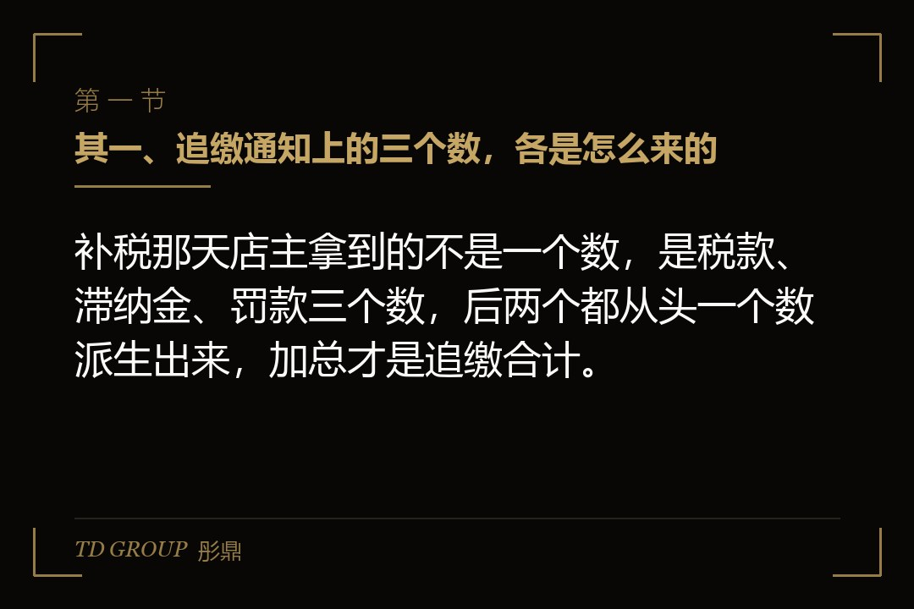
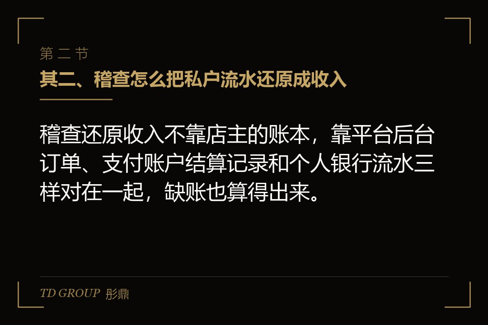
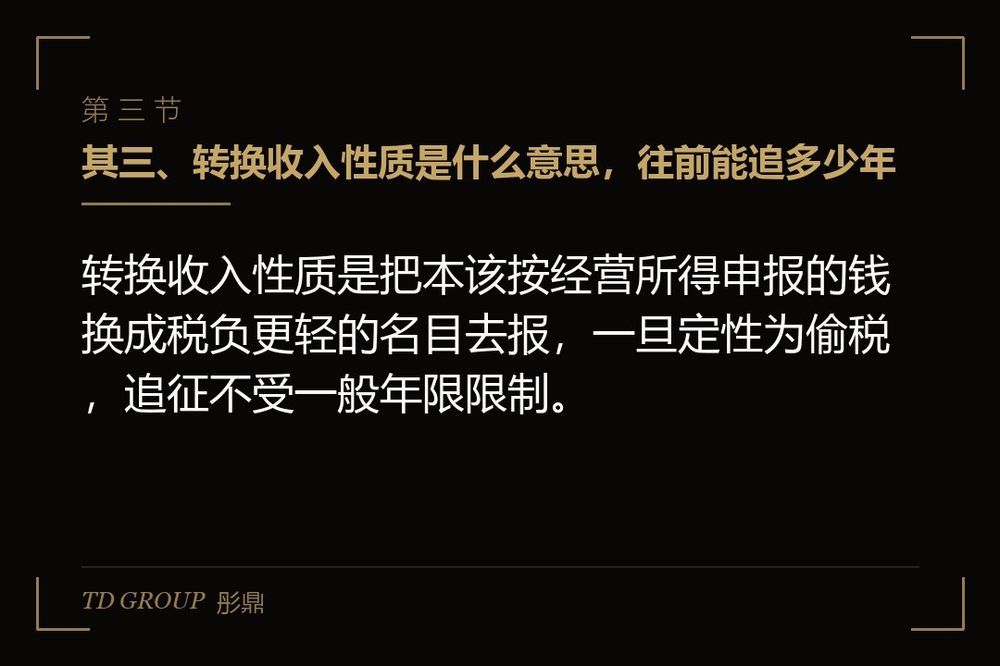

其一、追缴通知上的三个数，各是怎么来的

结论先行：补税那天店主拿到的不是一个数，是税款、滞纳金、罚款三个数，后两个都从头一个数派生出来，加总才是追缴合计。
杭州一名网络主播，直播带货的货款和坑位费有相当一部分打进了个人账户，申报时又把一部分经营收入换了个名目。税务机关查实后认定少缴税款三百一十三点四五万元，追缴税款、滞纳金加罚款，合计六百三十一点九六万元，处理时间是2025年12月。
六百三十一万比三百一十三万多出来的那三百多万，不是税务机关随手加上去的。它由两块组成：一块是滞纳金，从税款本该缴的那天起按日计算；另一块是罚款，按少缴税款的倍数定。三块加在一起，才是追缴通知上的合计数。
打个比方，税款是本来就该还的本金，滞纳金是本金拖着不还的利息，罚款是违约金。本金定了，利息看拖了多久，违约金看情节轻重。店主往往只盯着本金那一个数，可后两个数才是把合计推到两倍的东西。
这七起案件是国家税务总局2026年7月10日集中曝光的，全部是网红或网店，共同点是私户收款、转换收入性质、少报或者不报。把合计数除以少缴税款，七起都落在一点七倍到二点二倍之间。
所以本文只回答一件事：这个合计数是怎么算出来的。至于平台从2025年起按季度向税务机关报送经营者收入这件事，它是店主被盯上的起点，不在本文展开，专题另有一篇讲它。
其二、稽查怎么把私户流水还原成收入

结论先行：稽查还原收入不靠店主的账本，靠平台后台订单、支付账户结算记录和个人银行流水三样对在一起，缺账也算得出来。
聊城一家做网店的商贸经营部，货款长期打进老板和家人的个人银行卡，压根没办理过纳税申报。税务机关查实少缴税款五百四十四点七二万元，追缴合计九百七十一点二九万元，处理时间是2025年7月。
这家店没有账，可稽查照样算得出收入。头一样是平台后台：每一笔订单、退款、平台扣的服务费，平台自己都留着记录，税务机关调得到。接着是支付账户：平台结算的钱先进支付账户，再提现到银行卡，每一笔提现都有对应关系。
再一样是银行流水。私户收款的钱最终都要落到某张卡上，把老板本人、配偶、员工名下那几张卡的流水拉出来，跟平台结算和支付账户的提现一比，进了多少、出了多少、哪些是货款、哪些是个人消费，基本都能对上。
三样之外还有旁证。快递面单上有发货量，仓库有进出库记录，供货商那边有对账单，这些数跟平台订单量一比，多发了多少货、多收了多少钱，量级立刻显出来。店主说货是送朋友的、钱是借来的，要拿得出对应的凭据才站得住。
用大白话说，私户收款就是把店里的钱装进自己口袋，可口袋上有拉链，拉链的记录在平台和银行手里。稽查做的事，就是把那几条记录拼成一张完整的收入表。店主自己申报的数，只是拿来跟这张表对照的。
其三、转换收入性质是什么意思，往前能追多少年

结论先行：转换收入性质是把本该按经营所得申报的钱换成税负更轻的名目去报，一旦定性为偷税，追征不受一般年限限制。
沈阳和兰州各有一名主播，一个把直播佣金换了名目申报，一个直接把部分收入隐匿不报，分别少缴税款一百六十七点四六万元和九十七点七四万元，同样在这次曝光的七起里。
「转换收入性质」听起来专业，说白了是这样：主播帮品牌带货拿的佣金和坑位费，本来属于经营所得或者劳务报酬，有人把它包装成个人之间的借款、赠与，或者用另一个主体的名义收下来，报税时按更轻的口径走。稽查还原流水时，钱的来路和用途一对，名目就站不住了。
往前追多少年，是店主最关心的问题。《税收征管法》对一般性的少缴税款规定了追征年限，但对偷税、抗税、骗税明确不受这个年限限制。这意味着，只要被定性为偷税，从私户收款开始的那一年起，账都可能被翻出来。
偷税和算错账是两回事。申报时把数字填错了，或者对政策理解有偏差，税务机关补税的同时，一般按追征年限处理；而私户收款、不设账、做假申报，这些动作本身就说明是有意少报，落进的是偷税那一档。定性不同，追多少年、罚多少倍，都跟着不同。
上面这几起案件的处理时间集中在2025年下半年到2026年初，而查的收入往往横跨好几个年度。具体追到哪一年，以主管税务机关的认定为准。关键在于，时间不会替店主把旧账抹掉。
其四、税款是怎么算的：增值税和所得税分开算
结论先行：还原出来的收入要分两道算税，先按销售额算增值税，再按扣掉成本后的所得算所得税，没有成本凭证的店补得更多。
遂宁一家通讯经营部，手机和配件通过网店销售，货款进私户，申报时做了虚假申报，查实少缴税款二百八十一点七一万元，追缴合计四百六十九点二二万元，处理时间是2025年10月。
头一道是增值税。增值税看的是销售额，跟赚没赚钱无关。现行规则下，小规模纳税人季度销售额三十万元以内免增值税，适用百分之三征收率的部分目前减按百分之一征收；年销售额超过五百万元就要登记为一般纳税人，按一般计税方法算。私户收款被还原后，这些线一条条重新划。
假设有家做服装的网店，按个体户小规模纳税人申报，每个季度报的销售额都在三十万元以内，年年免税。稽查把私户流水还原之后，一年实际卖了七百万元，早就过了五百万元那条线。那么从超过的那个时点起，它本该登记为一般纳税人，增值税要按一般计税方法重算，前面免掉的那部分也要补。
第二道是所得税。个体工商户和个人独资企业交的是个人所得税里的经营所得，公司交企业所得税。计税依据是收入减去成本费用，可私户收款的店往往拿不出进货发票和费用凭证，成本扣不了多少，所得就显得特别高。
于是出现一个反直觉的结果：查账那天，成本凭证越少的店，补的税越多。当年觉得开发票麻烦、能省就省，到了补税那天，省下来的每一张发票都变成了扣不掉的成本。具体税率与优惠的适用，以主管税务机关口径为准。
其五、滞纳金按日万分之五，三年滚出一半
结论先行：滞纳金从税款本该缴纳的次日起按日加收万分之五，一年累计约为税款的百分之十八，拖三年就超过税款的一半。
滞纳金不是罚款，它是对国家税款被占用的补偿，性质更像利息，但计算方式比多数贷款都狠：按日万分之五，不分节假日，从滞纳之日起一直算到实际缴清那天。
把这个数放大看。万分之五乘以三百六十五天，一年就是百分之十八点二五。假设有家网店2023年少缴了一百万元税款，2026年才被查出来并缴清，拖了整三年，滞纳金大约是五十五万元，超过税款的一半。
这就是为什么前面那几起案件里，追缴合计常常远超税款本身。查的年度越早，滞纳金滚得越长；而私户收款的店通常不是一年两年，而是从开店那天起就这么干，最早那几年的税款，滞纳金可能已经跟本金差不多。
对店主来说，滞纳金有一个特点值得记住：它不因为你不知道而停止计算。稽查通知是哪天到的不重要，税款本该缴的那天才是起点。因此拖延不是策略，是让数字每天往上走。
其六、罚款倍数怎么定，为什么合计是两倍上下
结论先行：偷税的罚款是不缴或少缴税款的百分之五十以上五倍以下，实际倍数看情节，加上税款和滞纳金，合计常落在两倍上下。
宁波一名网络主播，私户收款加虚假申报，少缴税款一百零八点五五万元，追缴合计一百八十五点三七万元，处理时间是2026年3月。合计数除以少缴税款，大约一点七倍，是七起里偏低的一档。
《税收征管法》对偷税的处罚是追缴税款、滞纳金，并处不缴或少缴税款百分之五十以上五倍以下的罚款。这个区间很宽，落在哪一档，看的是情节：是不是主动配合、有没有在检查期间补缴、有没有伪造凭证、是不是屡查屡犯。
把三块拼起来算一遍：税款一倍打底，滞纳金按年限滚，通常是税款的两三成到一半，罚款多数落在一倍以内。加总下来，一点七倍到二点二倍，正是这七起案件的实际区间。合计约为少缴税款的两倍上下，不是巧合，是算式本身决定的。
接着上一章那家假设的网店往下算。少缴税款一百万元，拖了三年，滞纳金五十五万元左右；罚款如果按百分之五十定，是五十万元，按一倍定，是一百万元。合计落在两百零五万元到两百五十五万元之间，也就是少缴税款的两倍到两倍半。这个假设的账，跟七起真实案件的区间对得上。
倍数怎么压低，规则也写得清楚：检查开始前主动补缴、检查期间如实说明情况并配合的，处罚从轻。反过来，销毁凭证、拒不提供流水、继续做假账的，倍数往上走。具体倍数由主管税务机关根据案情认定。
其七、注销公司为什么不是终点
结论先行：注销主体不消灭已经发生的纳税义务，个体户和个独的税款由经营者本人承担，公司注销前要清税，清税不实可以追到股东。
北京一家教育科技公司，课程款走私户，申报时做了虚假申报，查实少缴税款一百零四点八八万元，追缴合计一百八十七点零二万元，处理时间是2025年11月。有店主看到这类案子的头一个念头是：把公司注销了是不是就没事了。
答案是不行，而且分主体看。个体工商户和个人独资企业没有独立的法人财产，经营期间的税款本来就是经营者个人的债务，注销登记只是把营业执照交回去，债务跟着人走。
公司注销前必须向税务机关办理清税，把该缴的税缴清、该报的报完。清税时隐瞒了私户收款的收入，注销后被查出来，税务机关可以要求股东和清算义务人承担责任。至于换一个主体接着开店，平台报送的收入信息按身份归集，新主体和旧账户一对就连上了。
假设有位店主把原来的个体户注销，用配偶的名字重新办了一张执照，仓库还是那个仓库，收款卡还是那几张卡，主播还是自己。平台报送的信息里，身份、账户、店铺三样一对，新店和旧店就是同一个人的生意。至于一个店该不该拆成几个主体，专题另有一篇讲，不在本文展开。
用一句话概括：纳税义务是在收到钱的那一刻发生的，后面不管怎么换执照、换名字、换账户，都是同一笔账。因此，历史那段该怎么衔接，得在被查之前主动处理，而不是指望注销把它带走。
其八、三份口径自查：流水、申报、主体
结论先行：私户收款的店主被查之前能做的，是把流水口径、申报口径、主体口径三样对齐，让平台报的数、自己报的数和收款主体是同一件事。
头一份是流水口径。把平台后台的结算总额、支付账户的提现总额、所有收款银行卡的进账总额三个数拉出来，按年度对。三个数对不上的地方，就是稽查会先问的地方。
第二份是申报口径。把每年实际申报的销售额和所得，跟流水口径算出来的数放在一起。差额是多少，差在哪个年度，是收入没报还是名目换了，自己先算清楚。差额乘以对应的税负，再加上按日万分之五滚到今天的滞纳金，就是一个大致的底数。
第三份是主体口径。收款的是谁，申报的是谁，营业执照上是谁，三者是不是同一个。个体户定期定额的，实际经营规模有没有早就超过定额和核定适用的前提；用个人名义收公司货款的，性质到底算什么。这一份对不齐，前两份算得再准也落不了地。
三份口径对齐之后，才谈得上往后怎么走。核定征收是《税收征管法》认可的一种征收方式，前提是主体和规模符合主管税务机关的认定条件，它解决的是今后的账怎么算，不是把过去私户收款那段一笔勾销。先把历史账补齐，再去申请核定，顺序反了，申请本身就过不了。
彤鼎的税务筹划服务里有一条电商税务合规路线图（含核定征收申请）：先判断这家店的主体和规模能不能核、在哪个主管税务机关能核，申请这一步我们帮你办，最后把核定之前那段历史账衔接上。我们跟华尔街俱乐部有合作，私董会上这类历史账怎么衔接的案子，听得多一些。
最后留一个问题。开头那位杭州主播，如果在2025年10月平台头一次报送收入之前就把三份口径对齐、主动补缴，罚款倍数大概率会往下走；如果等稽查上门再补，合计数就是六百三十一万那个量级。换成是你，会在平台报送之前主动去补，还是等税务机关先来找？